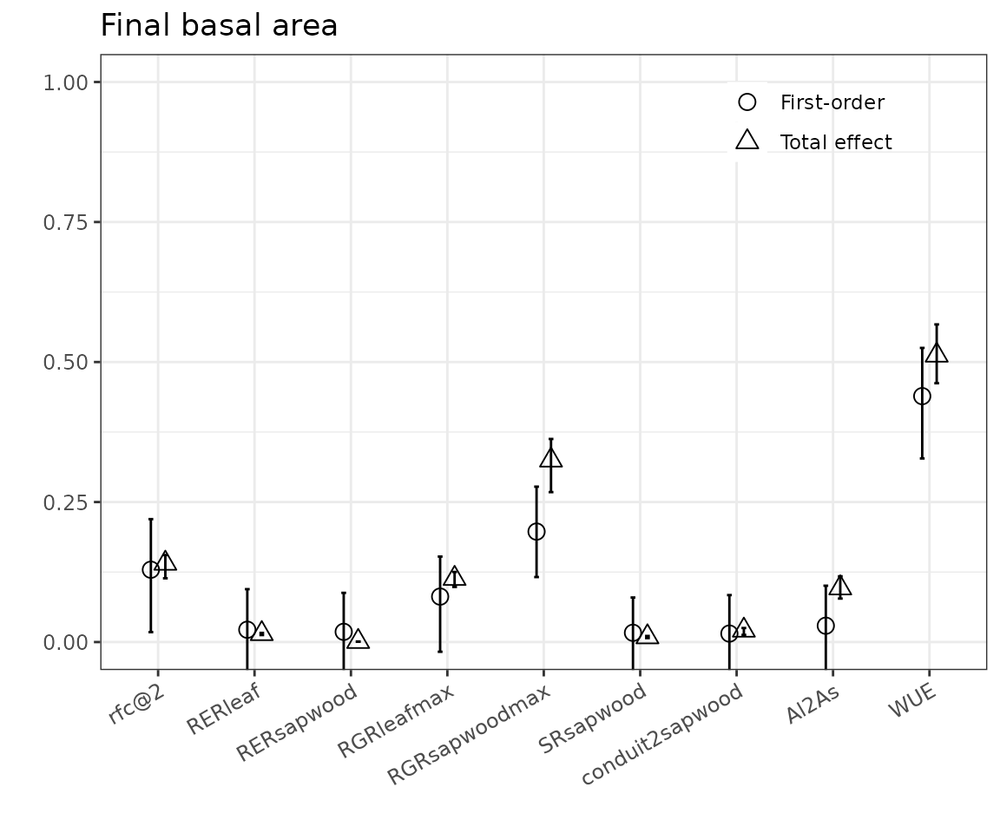
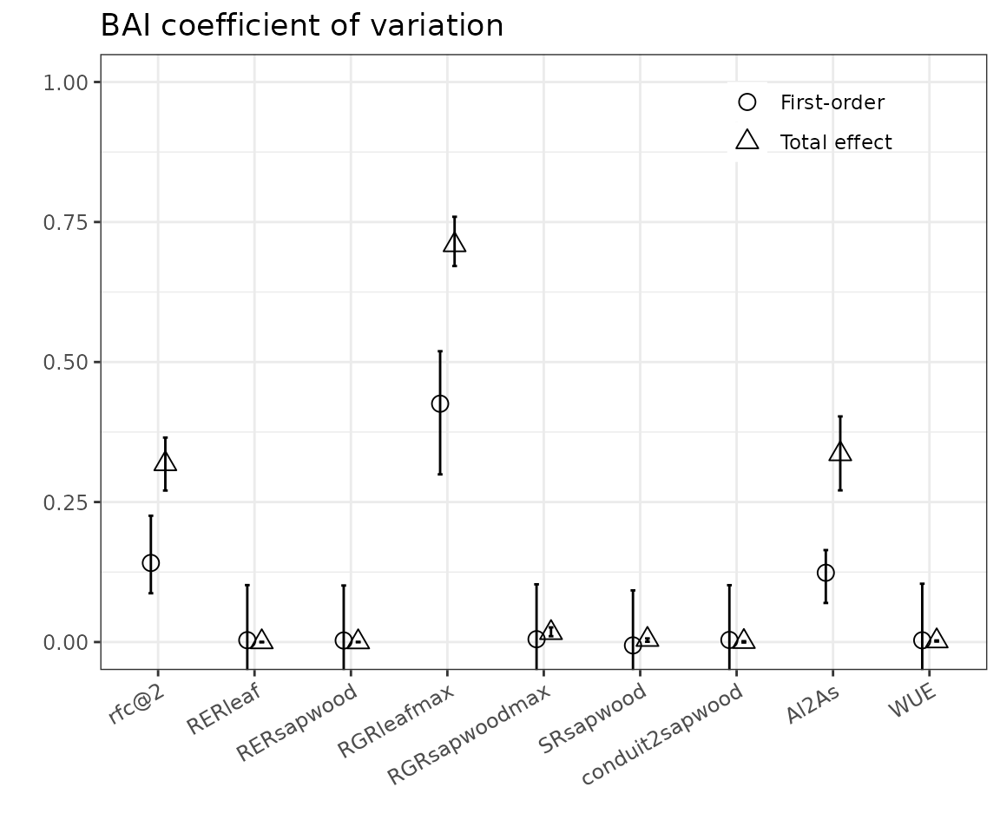
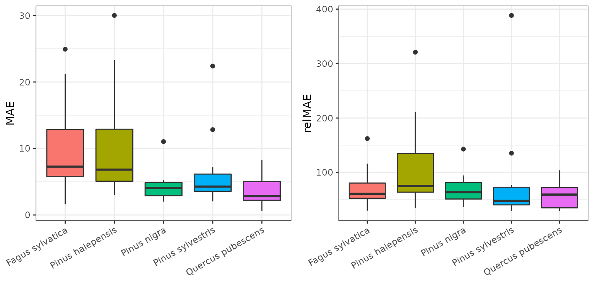
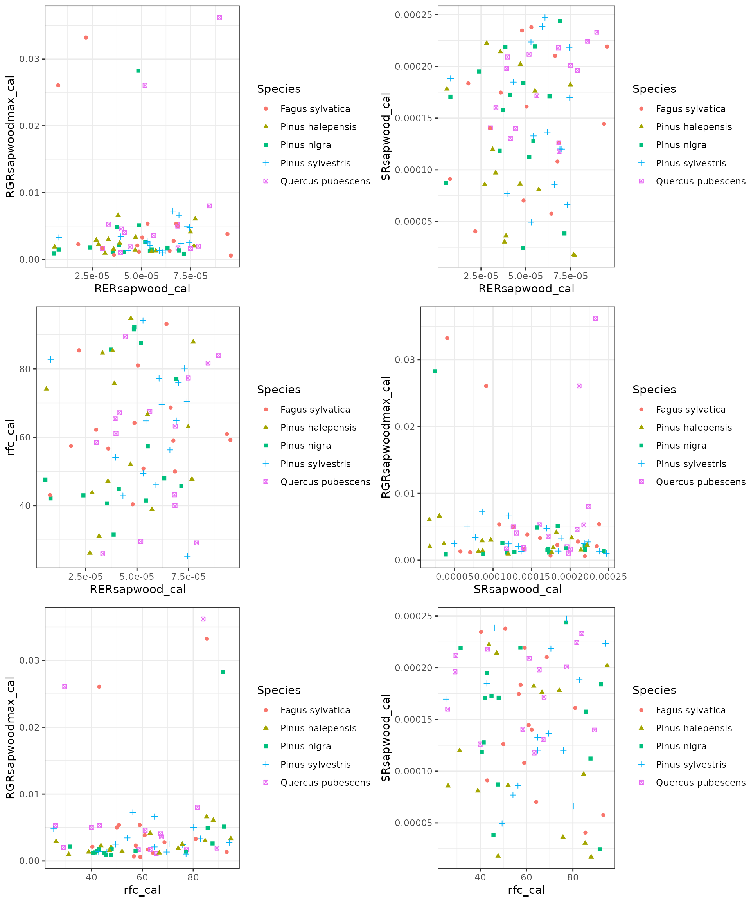
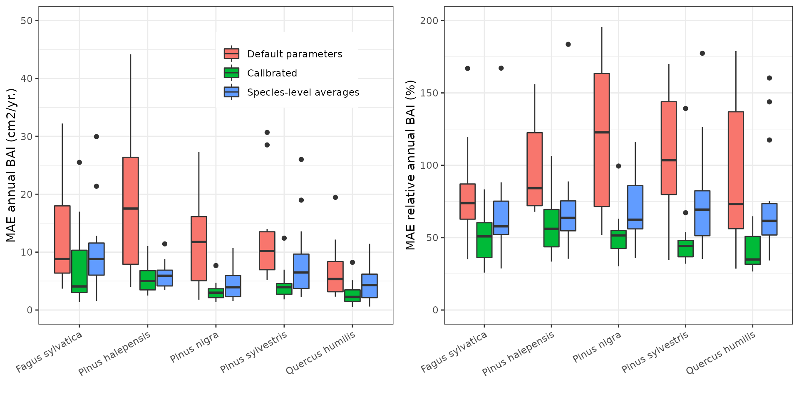
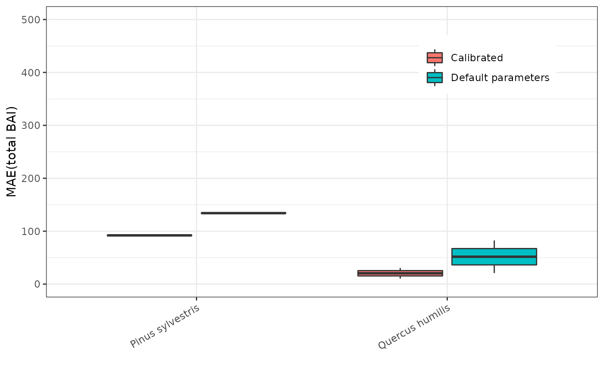

Growth calibration
Miquel De Cáceres
2022-02-15
Source:vignettes/parametrization/GrowthCalibration.Rmd
GrowthCalibration.RmdIntroduction
Goals
The growth model included in medfate implements processes regulating plant carbon balance and growth. Species-level parameter values for these processes are obtained from: (a) global functional trait databases; (b) meta-modelling exercises; (c) model calibration exercises. The main goal of the current exercise is to obtain suitable values (via model calibration) for parameters related with the maintenance respiration costs, formation rates and senescence rates of sapwood, because these are difficult to obtain using other means. At the same time, the exercise provides information on the performance of the model to predict secondary growth at the tree and stand levels.
Observational data
The data set used for the calibration exercise corresponds to 75 permanent forest plots of the Spanish National Forest Inventory located in Catalonia. Forest plots correspond to pure stands whose dominant species are Fagus sylvatica, Pinus halepensis, Pinus nigra, Pinus sylvestris or Quercus pubescens. There are 15 plots per each dominant species and each set of 15 plots encompass a range of climatic aridity. Dendrochronological series are available for up to 6 trees per plot, which conforms the observational data for the calibration exercise. In addition, local measurements were made in 2015 for sampled trees of the same plots which : (a) the leaf area to sapwood area ratio (Al2As), the water potential at turgor loss point (which we use as estimate of VCleaf_d), and specific leaf area (SLA).
Target parameters for calibration
- Sapwood daily respiration rate (RERsapwood) - Used to modulate maintenance respiration demands of living sapwood tissues (parenchyma, cambium, phloem, etc.), which in large trees may also represent a large fraction of maintenance respiration.
- Sapwood maximum growth rate (RGRsapwoodmax) - Used to modulate maximum daily sapwood growth rates (relative to current sapwood area). Actual relative growth rates include temperature and sink limitations to growth.
- Sapwood daily senescence rate (SRsapwood) - Used to determine the daily proportion of sapwood that becomes heartwood. It regulates the area of functional sapwood, together with the sapwood maximum growth rate.
Sensitivity analysis
Response function final basal area of a IFN3 plot of Pinus sylvestris (a single cohort), after simulating growth between 2001 and 2005, as a function of the target parameters, as well as some others.

The variable that primarily determines growth rate is WUE, which, together with the transpiration rate determines carbon availability. Sink limitations may also be operating

Calibration procedure
For each forest plot, we matched each dendrochronological series with a tree cohort by finding which tree (in the IFN3 sampling) had the DBH most similar to that estimated from the dendrochronology at year 2000. Then, we took the series of annual basal area increments (BAI) as the observations to be matched by model growth predictions for the matched tree cohort. We calibrated the target parameters for the target dominant species using a genetic algorithm. Model parameter values were assumed to be the same for all cohorts of the target species. The remaining species in the plot were given default constant parameter values. The objective function for the genetic algorithm was the mean across cohorts with BAI observations, of the mean absolute error (MAE) resulting from comparing observed and predicted annual BAI.
Simulations are performed using daily weather data obtained via interpolation using package meteoland (2001 - 2015 period), and soil physical characteristics where drawn from SoilGrids data base.
Calibration results
Error
| N | MeanBAI | MAE | MAEcal | relMAEcal | |
|---|---|---|---|---|---|
| Fagus sylvatica | 15 | 14.911874 | 14.816396 | 9.692790 | 71.11579 |
| Pinus halepensis | 15 | 9.353759 | 19.615652 | 10.120681 | 110.43257 |
| Pinus nigra | 15 | 6.391289 | 11.570517 | 4.232779 | 68.48201 |
| Pinus sylvestris | 15 | 9.344288 | 14.847028 | 6.087542 | 78.49060 |
| Quercus pubescens | 15 | 6.494994 | 6.603388 | 3.842316 | 57.71123 |
| Angiosperm | 30 | 10.703434 | 10.709892 | 6.767553 | 64.41351 |
| Gymnosperm | 45 | 8.363112 | 15.344399 | 6.813667 | 85.80173 |
| All | 75 | 9.299241 | 13.490596 | 6.795222 | 77.24644 |
Results of calibration for each plot:

Parameter distribution
Summary of parameters by species:
| RERsapwood | RGRsapwoodmax | SRsapwood | rfc@2 | |
|---|---|---|---|---|
| Fagus sylvatica | 5.05e-05 | 0.0027813 | 0.0001445 | 59.19775 |
| Pinus halepensis | 3.90e-05 | 0.0022681 | 0.0000971 | 63.08906 |
| Pinus nigra | 4.85e-05 | 0.0014820 | 0.0001707 | 47.64178 |
| Pinus sylvestris | 6.08e-05 | 0.0025091 | 0.0001365 | 64.81508 |
| Quercus pubescens | 5.63e-05 | 0.0040606 | 0.0001960 | 63.26933 |
| Angiosperm | 5.25e-05 | 0.0034371 | 0.0001664 | 61.03409 |
| Gymnosperm | 5.20e-05 | 0.0021246 | 0.0001365 | 57.35812 |
| All | 5.20e-05 | 0.0024443 | 0.0001600 | 60.94327 |
## Analysis of Variance Table
##
## Response: RGRsapwoodmax_cal
## Df Sum Sq Mean Sq F value Pr(>F)
## Species 4 0.0002392 5.9802e-05 1.1952 0.3206
## Residuals 70 0.0035024 5.0034e-05## Analysis of Variance Table
##
## Response: RERsapwood_cal
## Df Sum Sq Mean Sq F value Pr(>F)
## Species 4 2.7350e-09 6.8375e-10 1.5882 0.187
## Residuals 70 3.0136e-08 4.3051e-10## Analysis of Variance Table
##
## Response: SRsapwood_cal
## Df Sum Sq Mean Sq F value Pr(>F)
## Species 4 2.9000e-08 7.2499e-09 1.8534 0.1284
## Residuals 70 2.7381e-07 3.9116e-09## Analysis of Variance Table
##
## Response: rfc_cal
## Df Sum Sq Mean Sq F value Pr(>F)
## Species 4 287.7 71.94 0.1862 0.9448
## Residuals 70 27037.3 386.25

Comparison between considering sink limitation or not
Error
## Analysis of Variance Table
##
## Response: value_cal
## Df Sum Sq Mean Sq F value Pr(>F)
## Species 4 1574.2 393.55 7.2676 2.700e-05 ***
## type 1 1230.0 1230.03 22.7146 5.128e-06 ***
## Species:type 4 1040.0 260.00 4.8013 0.001231 **
## Residuals 125 6769.0 54.15
## ---
## Signif. codes: 0 '***' 0.001 '**' 0.01 '*' 0.05 '.' 0.1 ' ' 1## Analysis of Variance Table
##
## Response: relvalue_cal
## Df Sum Sq Mean Sq F value Pr(>F)
## Species 4 53415 13354 2.6984 0.03371 *
## type 1 109489 109489 22.1246 6.653e-06 ***
## Species:type 4 56264 14066 2.8423 0.02693 *
## Residuals 125 618591 4949
## ---
## Signif. codes: 0 '***' 0.001 '**' 0.01 '*' 0.05 '.' 0.1 ' ' 1## Warning: Removed 15 rows containing non-finite values (stat_boxplot).
## Removed 15 rows containing non-finite values (stat_boxplot).
## Warning: Removed 16 rows containing missing values (geom_point).
## Removed 16 rows containing missing values (geom_point).
Parameter distribution
## Analysis of Variance Table
##
## Response: RERsapwood_cal
## Df Sum Sq Mean Sq F value Pr(>F)
## Species 4 1.6690e-09 4.1726e-10 0.6936 0.5978
## type 1 3.8000e-11 3.7920e-11 0.0630 0.8022
## Species:type 4 1.6360e-09 4.0907e-10 0.6800 0.6071
## Residuals 125 7.5201e-08 6.0161e-10## Analysis of Variance Table
##
## Response: RGRsapwoodmax_cal
## Df Sum Sq Mean Sq F value Pr(>F)
## Species 4 0.0013619 0.0003405 2.7763 0.029855 *
## type 1 0.0105863 0.0105863 86.3234 6.164e-16 ***
## Species:type 4 0.0017402 0.0004350 3.5475 0.008891 **
## Residuals 125 0.0153294 0.0001226
## ---
## Signif. codes: 0 '***' 0.001 '**' 0.01 '*' 0.05 '.' 0.1 ' ' 1## Analysis of Variance Table
##
## Response: SRsapwood_cal
## Df Sum Sq Mean Sq F value Pr(>F)
## Species 4 8.8260e-08 2.2064e-08 5.0405 0.0008452 ***
## type 1 1.4160e-08 1.4156e-08 3.2339 0.0745405 .
## Species:type 4 4.1860e-08 1.0464e-08 2.3905 0.0543166 .
## Residuals 125 5.4717e-07 4.3774e-09
## ---
## Signif. codes: 0 '***' 0.001 '**' 0.01 '*' 0.05 '.' 0.1 ' ' 1## Analysis of Variance Table
##
## Response: rfc_cal
## Df Sum Sq Mean Sq F value Pr(>F)
## Species 4 3162 790.6 1.9131 0.11233
## type 1 7978 7978.3 19.3054 2.351e-05 ***
## Species:type 4 4300 1075.1 2.6014 0.03919 *
## Residuals 125 51658 413.3
## ---
## Signif. codes: 0 '***' 0.001 '**' 0.01 '*' 0.05 '.' 0.1 ' ' 1## Warning: Removed 15 rows containing non-finite values (stat_boxplot).
## Removed 15 rows containing non-finite values (stat_boxplot).
## Removed 15 rows containing non-finite values (stat_boxplot).
## Removed 15 rows containing non-finite values (stat_boxplot).
Final evaluation
Annual BAI
Annual BAI evaluation results by plot:| Species | OBS | MAE_unc | MAE_cal | MAErel_unc | MAErel_cal | |
|---|---|---|---|---|---|---|
| 80210 | Quercus humilis | 4.963597 | 2.124068 | 1.651088 | 42.79291 | 33.26394 |
| 80292 | Pinus sylvestris | 10.376841 | 10.348576 | 7.334630 | 99.72761 | 70.68269 |
| 80299 | Quercus humilis | 4.510970 | 6.335806 | 2.668738 | 140.45329 | 59.16105 |
Annual BAI evaluation results by species (medians):
| Species | OBS | MAE_unc | MAE_cal | MAErel_unc | MAErel_cal |
|---|---|---|---|---|---|
| Pinus sylvestris | 10.376841 | 10.348576 | 7.334630 | 99.72761 | 70.68269 |
| Quercus humilis | 4.737284 | 4.229937 | 2.159913 | 91.62310 | 46.21250 |


Total BAI
Evaluation of total BAI during the 15 years:
| Species | OBS | MAE_unc | MAE_cal | MAErel_unc | MAErel_cal | |
|---|---|---|---|---|---|---|
| 80210 | Quercus humilis | 68.43315 | 20.93986 | 10.43513 | 35.19846 | 17.63819 |
| 80292 | Pinus sylvestris | 144.98118 | 134.14252 | 92.11885 | 122.46092 | 71.99343 |
| 80299 | Quercus humilis | 63.71430 | 82.57453 | 30.53428 | 173.00410 | 39.45551 |
| Species | OBS | MAE_unc | MAE_cal | MAErel_unc | MAErel_cal |
|---|---|---|---|---|---|
| Pinus sylvestris | 144.98118 | 134.1425 | 92.11885 | 122.4609 | 71.99343 |
| Quercus humilis | 66.07372 | 51.7572 | 20.48470 | 104.1013 | 28.54685 |
